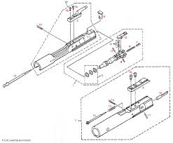

Стрілецька зброя: Теорія
Стрілецька зброя — ствольна зброя калібром менше 20 мм, призначена для ураження цілей кулями.
Автоматична
Здатна вести вогонь чергами (наприклад, АК-74, M4).
Напівавтоматична
Один постріл — одне натискання гачка (SVD, Glock 17).
Легендарні платформи
Порівняння двох найпопулярніших платформ у світі.
Платформа АК (Калашніков)

| Характеристика | Значення |
|---|---|
| Калібр | 5.45x39 мм |
| Принцип роботи | Відведення газів |
| Скорострільність | 600 постр/хв |
Платформа AR-15 (M16/M4)

| Характеристика | Значення |
|---|---|
| Калібр | 5.56x45 мм (NATO) |
| Принцип роботи | Direct Impingement |
| Скорострільність | 700-950 постр/хв |
Креслення та схеми
Внутрішня будова механізмів.
Схема роботи автоматики АК

Рис 1. Розріз ствольної коробки та газовідвідного механізму.
Схема затвора (Bolt Carrier Group)
Рис 2. Робота ударника та затворної групи AR-систем.